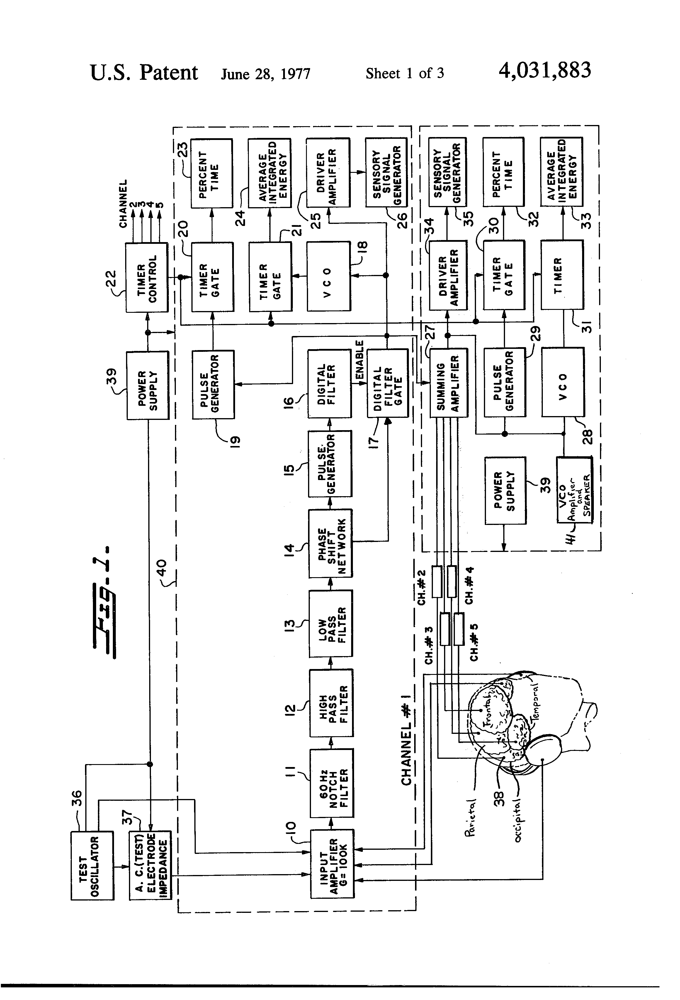

Fehmi Phase-Integrating Biofeedback Computer
A five-channel EEG/EMG instrument that made the phase relationship of brainwaves directly audible

Overview
The Multiple Channel Phase Integrating Biofeedback Computer of Biofeedback Computers Inc. (Princeton, New Jersey), invented by Lester G. Fehmi and Joseph R. Schneider and protected by US Patent 4,031,883 (filed July 21, 1976; granted June 28, 1977; priority to work begun in 1974), is a biofeedback instrument that monitors several simultaneous bioelectrical signals — brainwaves (EEG) and muscle potentials (EMG) — and synthesizes them into a real-time auditory (and optionally tactile) feedback signal.
Its defining innovation is phase integration. Rather than simply reporting the amplitude or frequency of a single channel, the instrument instantaneously analyzes the phase relationship among two or more of the biological rhythms it is monitoring. The resulting feedback tone communicates whether the different regions are firing in phase (coherent) or out of phase. The abstract property of phase unity between brain sites is thus rendered as a concrete, hearable, and highly controllable signal.
The instrument amplifies and filters the monopolar signals from scalp or body contacts, then combines them so the frequency, amplitude, and phase agreement among channels maps to the feedback waveform. A user trains to hold the tone, which in practice means learning to sustain a brain state in which multiple cortical regions fire in synchrony. The patent notes the feedback could also be arranged for multiple people, making the phase relationship between two people's brains audible.
Deep dive
Most biofeedback tells you about a single signal: how fast my heart, how tense my muscle, how much alpha I am producing. The Fehmi system makes a relationship the object of control. It integrates the phase of several EEG/EMG channels and encodes their agreement into the pitch, volume, and timbre of a tone. The trainee who holds the tone steady is, without any verbal description, sustaining phase synchrony across cortical sites — managing coherence directly.
The instrument accepts both brain and muscle signals from contacts on the scalp or body, so the same hardware feeds back cortical rhythms and muscular tension. The feedback loops are multimodal and relational.
Fehmi, a clinical psychologist and early serious researcher of EEG biofeedback, ran a laboratory/clinical practice around brainwave training, building instruments under the Biofeedback Computers Inc. banner rather than selling into the mass consumer market. The phase-integrating machine sits in the 1970s biofeedback movement's most ambitious register: the computer as an instrument for training attention and state, decades before consumer meditation wearables made the idea ordinary.
Relax Stress Reduction (1984) is a single-channel galvanic-skin-response toy; IBVA (1991) is a single-channel EEG digitizer. Nothing in the collection feeds back a relation — the phase structure among channels — rather than a single signal. This is the museum's only phase-synchrony biofeedback instrument and its earliest explicit multi-channel neurofeedback artifact, shown through public-domain patent figures.
Team & pioneers
- Lester G. Fehmi. Co-inventor; clinical psychologist and pioneer of EEG biofeedback research and instrumentation.
- Joseph R. Schneider. Co-inventor of the phase-integrating instrument.
- Biofeedback Computers Inc. Princeton, NJ company to which the patent was assigned.
Media
